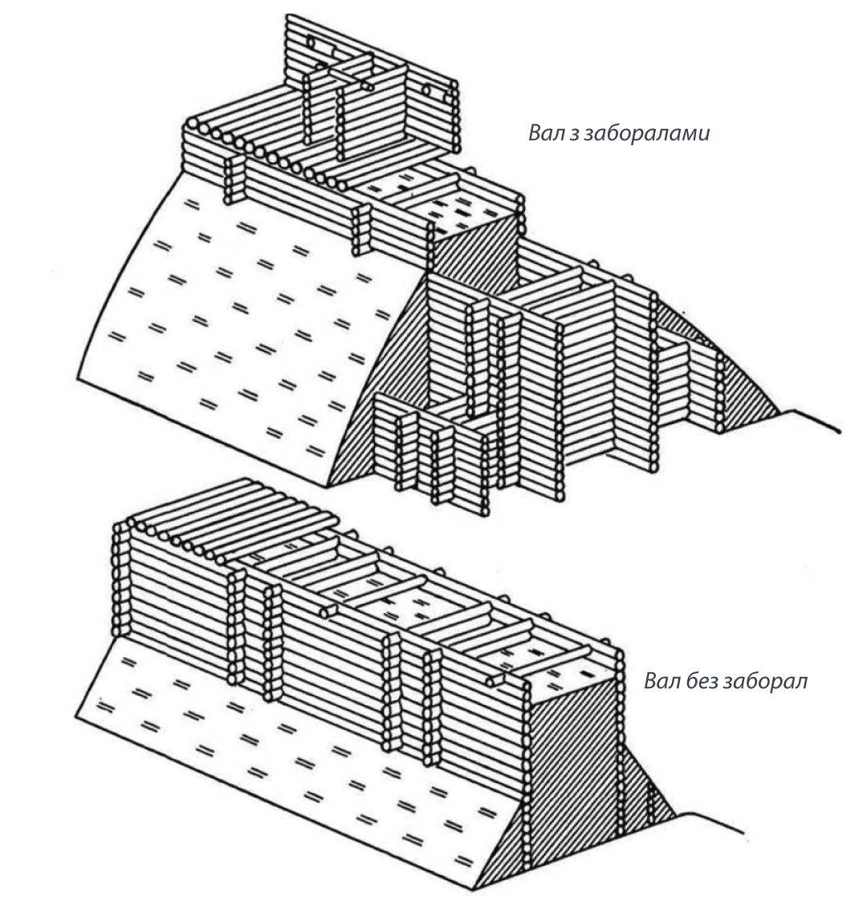

Загальна довжина близько 1000 кілометрів, висота 12 метрів і 15—20 метрів товщина. Найбільша пам’ятка Русі наймеш досліджена. Точно не відомо, хто будував Вали. Та якби не вони, ми б сповідували іслам і розмовляли однією з тюркських мов.
Понад сто років тому козак Борзнянської сотні Сільвестр Бугай спробував побудувати у своїй клуні вічний двигун. Його син усе життя намагався довести теорему Ферма. Онук досі розгадує таїну Великого вибуху. Вічний двигун досі не вигаданий, теорему Ферма довела інша людина, а таїна Великого вибуху, ймовірно, так і залишиться таїною. Натомість Всесвіт відкрив родині Бугаїв деякі інші загадки.
Математик та краєзнавець Аркадій Бугай (той, що переймався теоремою) став найвідомішим дослідником Змієвих валів — фортифікаційних споруд долітописної Русі. А доктор фізико-математичних наук, професор Олександр Бугай (той, кому досі не дає спокою Великий вибух) продовжив справу батька — видав його книгу, створив сайт, присвячений валам і зібрав колекцію археологічних артефактів.
Самі Змієві вали — теж археологічний артефакт. Настільки великий, що вчені його довгий час просто не помічали. Циклопічність споруди відчуваєш усім тілом, коли стоїш у розрізі валу неподалік від села Круглик під Києвом (тут розташована найбільш збережена ділянка). Над тобою десять метрів земляної стіни, яка тягнеться на кілька кілометрів ліворуч і праворуч. За спиною Київ, перед очима пагорби, за ними степ.
Загальна довжина валів, що оточують Київ з півдня і заходу, — близько тисячі кілометрів. Точніше, оточували, адже добра їх половина зруйнована і забудована, а рівчаки, що йшли вздовж фронтонної частини укріплення, засипані, заросли або перетворилися на стихійні сміттєзвалища. Проте на супутникових знімках видно, що вали й досі утворюють складний ієрогліф, у якому закладена формула виживання древніх слов’ян. Саме та формула, яку з 1968 року розшифровували у родині Бугаїв.
Тривалий час єдиним «науковим» поясненням виникнення Змієвих валів та їх назви була народна казка. Етнографи записали близько двох десятків її версій. Загальна канва така. Поблизу Києва мешкав Змій-людожер. Щорічно він збирав данину з кожного київського двору хлопчиками і дівчатками. Коли черга дійшла до княжої доньки, на її захист став богатир Кирило Кожум’яка. Він переміг чудовисько, запряг його в плуг та проорав київську землю.
В одному варіанті стомлений Змій впав на березі річки, застогнав, випив її майже всю і сконав від проблем із травленням. Тому річка називається Стугною, а на її березі припиняється лінія валу. В іншому варіанті Змія спіткала така сама доля, але на березі моря (це цікавий момент, оскільки на Одещині також є Вали, так звані Траянові).
Цю легенду часів Київської Русі Аркадій Бугай інтерпретував як алегорію: Змій — образ кочовиків. Кирило Кожум’яка — уособлення давньоруського воїна. А експлуатація Змія означає використання військовополонених як рабів. До речі, на щитах багатьох кочових народів — від скіфів до печенігів — справді були зображені змії.
Перша літературна згадка про Вали Київщини міститься в листі єпископа Бруно Квертфурського (він же Брунон) до імператора германського Генріха ІІ від 1008 року. В цьому епістолярії єпископ, крім іншого, розповідає монарху про свою подорож до князя русів, тобто до хрестителя Русі Володимира Святославича. Оповідь Бруно Квертфурського така ж цікава, як і його життєпис.
Майбутній єпископ був сином графа фон Квертфурта і вважався далеким родичем самого імператора. Отримав блискучу освіту в Магдебурзькій школі. У доволі юному віці став ченцем бенедиктинського монастиря і отримав від Папи благословення на місіонерську діяльність. Шляхетне походження дозволяло молодому проповіднику знаходити спільну мову з сильними світу цього.
Шлях мандрівного ченця пролягав до печенігів через Київ. За свідченням самого Бруно, князь Володимир силоміць утримував його і умовляв не ходити до несамовитого народу, не шукати наглої смерті. Нагадаємо, що відмінності між західним обрядом (який сповідував Бруно) і східним (який сповідував князь Володимир) не перешкоджали братньохристиянському спілкуванню, оскільки події відбувалися за півстоліття до Великого розколу. Місяць тривали душеспасительні бесіди, і зрештою князь із важким серцем погодився супроводити Бруно до печенізького степу.
Подорож через володіння русів тривала два дні. Саме тоді Бруно познайомився з фортифікаційною системою Київщини:
…Кордони своєї держави князь оточив з усіх боків вельми довгою і міцною огорожею
«...Кордони своєї держави князь оточив з усіх боків вельми довгою і міцною огорожею». Враховуючи, що ця огорожа була на півдні від Києва і розміщувалася у двох днях пішого ходу, можна припустити, що йдеться про лінію Змієвого валу у межиріччі Стугни та Ірпеня. У вал були вбудовані ворота. За ними, ліворуч і праворуч від дороги стояли два кургани.
Текст Бруно дає змогу детально реконструювати події того дня, коли вони з князем вийшли за ворота.
Володимир зі своїм загоном став на одному кургані. Бруно з кількома супутниками — на іншому. Тремтячими руками молодий місіонер підняв над головою хрест і голосно промовив, дивлячись у небо: «Якщо любиш мене, Петре, паси мої вівці!» У відповідь загін князя гримнув молитву.
Шлях пролягав крізь дикий степ. Кілька годин ішов Бруно, зупинившись на хвилину лише тоді, коли на обрії замаячила кіннота печенізької варти. Чернець перехрестився й пішов назустріч небезпеці.
Цього разу йому пощастило. П’ять місяців по тому він тим же шляхом повернувся до володінь князя. За цей час місіонер-дипломат устиг знайти підхід до печенігів, утворити серед них християнську общину і навіть заснувати єпископію. Доля цієї єпископії невідома. Бруно не судилося повернутися до своїх духовних чад — через рік, під час аналогічної експедиції, прусські язичники відрубали єпископу-проповіднику голову.
Відштовхуючись від фрази Бруно про те, що князь оточив кордони своєї держави «вельми довгою і міцною огорожею», український історик Володимир Антонович у 1884 році зробив висновок, що Вали збудовані Володимиром одночасно зі спорудженням мостів на Десні, Острі, Трубежі і Стугні. Антонович є також автором першої схеми валів, щоправда, доволі неточної, оскільки не проводив власних польових досліджень, а наносив на мапу дані, що надходили від губернських чиновників, шкільних вчителів та любителів історії з різних повітів Київської губернії.
Проте залишилося незрозумілим, чому літопис 988 року нічого не говорить про будівництво валів. Аркадій Бугай свого часу підрахував, що робітник того періоду протягом одного сезону міг побудувати один погонний метр валу (12 м заввишки і 15–20 метрів завтовшки). Таким чином, князю Володимиру задля створення земляної стіни довжиною в сотні кілометрів довелося б мобілізувати більшу частину працездатного чоловічого населення Київської Русі.
А враховуючи необхідність задіяти велику кількість підрядників, розпорядників, військових інженерів і охоронців, валобудівництво мало би бути значно більш грандіозним починанням, ніж будівництво байкало-амурської магістралі у брежнєвську епоху. Чому ж про міст через Стугну літопис згадує, а про Вали — ні?
Пізніше вже радянські історики або уникали цього питання, або пояснювали цей пробіл класовою упередженістю Нестора-літописця, який, мовляв, залишався байдужим до страждань древніх трудівників.
Мине майже століття після створення першої картосхеми валів, і одного квітневого дня 1968 року, після лекції на фізико-математичному факультеті Київського педінституту, доцент Аркадій Бугай прикріпить біля своєї кафедри оголошення: «Добровільне дослідне товариство запрошує на роботу ентузіастів — археологів, істориків, топографів, фотографів, туристів, гітаристів, гумористів, кашоварів. Умова участі — любов до рідної землі».
Чому математик Бугай у доволі вже зрілому віці (йому було за п’ятдесят) перейнявся археологією? Його син згадує, що батька зацікавило словосполучення «Змієві вали» і що під час заміських прогулянок він відчув якийсь ірраціональний поштовх, зрозумівши, що земля навколо Києва — це terra incognita.
Аркадій Сільвестрович не просто ходив зі студентами по валах за маршрутами Антоновича. Він ретельно перевіряв та обмірював кожну ділянку, виправляв помилки, знаходив зруйновані траси валів і наносив їх на шкільні карти (інших не було).
Директор Центру археології Києва НАН України Михайло Сагайдак згадує, як у студентські часи він брав участь у цих походах: «Ми полювали на Вали. Скажімо, навесні, коли сходить озимина, на тих полях, по яких колись проходила траса валу, є смуга. Справа в тому, що на лінії валу інша вологість, і тому паростки більш насиченого кольору. І от ідеш-ідеш по смузі, поле закінчується, починається ліс, заходиш туди, а там ціла ділянка валу заввишки кілька метрів».
І от ідеш-ідеш по смузі, поле закінчується, починається ліс, заходиш туди, а там ціла ділянка валу заввишки кілька метрів
Пошуки тривали більше двадцяти років. Математик Бугай витратив на них весь свій вільний час та невеличкі сімейні заощадження, купуючи студентам квитки на приміські поїзди та годуючи їх бутербродами.
У найбільш віддалені від асфальтованих трас та залізничних станцій куточки Аркадій Бугай із сином Олександром діставалися на авто. На той час молодий кандидат фізико-математичних наук Олександр Бугай на перші свої серйозні заробітки придбав запорожець. З диявольським ревом виріб вітчизняного автопрому долав проліски, пагорби, калюжі, приносячи себе в жертву історичній науці.
Аркадій Бугай ініціював проведення радіовуглецевого аналізу знайдених у валах залишків вугілля. Звідки у земляних валах вугілля? Ну, по-перше, будівельники випалювали ділянки лісу під час спорудження валу. А, по-друге, серцевина насипу складалася або з випаленої глини (вали скіфського періоду), або з дерев’яних зрубів або ж настилів колод. Міцна основа перетворювала вал на справжню стіну, аби диверсійно-розвідувальна група кочовиків з лопатами не могла за ніч розкидати посеред валу прохід для кінноти.
Результати радіовуглецевого методу виявилися сенсацією. Найбільш ранній вал (за болотом, яке колись було озером Буян) датовано 150 роком до н. е.! Це епоха, коли протослов’янські племена перебували під владою скіфів. З верхів’їв річки Ірпінь починається вал, що, за даними, знов-таки, радіовуглецевого аналізу побудували у 530 році.
Загалом складається враження, що більшу частину цих споруд створено під час Великого переселення народів IV–VII століть, коли крізь територію сучасної України пройшли орди готів, вестготів, обрів, гунів. Між іншим, гуни, що зруйнували Боспорське царство, пограбували римлян і зупинилися трохи не в передмісті сучасного Парижа, оминули городища Київщини. Чому? Найбільш очевидна відповідь — тому що на заваді їм стояли Вали. Вершники не могли здолати обнесену рівчаком стіну з нахилом 45 градусів.
Логіка будівництва валів полягала ось у чому. Київ (чи ті городища, які були на київських пагорбах) був розташований у трьох річкових трикутниках: на сході Дніпро, на заході Ірпінь, на півдні Стугна. Другий трикутник: Дніпро — Трубіж — Рось. Третій: Дніпро — Тетерев — Рось. Найбільш незахищена ділянка — міжріччя на півдні, крізь які могла швидко пройти на Київ ворожа кіннота. Саме тут і збудовано більшу частину валів, іноді до шести паралельних трас, кожна з яких заввишки 12 метрів, кожна з яких обнесена рівчаком, кожна з яких збудована таким чином, щоб включити елементи ландшафту (річки, болота, яруги та кручі) у складну фортифікаційну систему.
Логіка будівництва валів полягала ось у чому. Київ (чи ті городища, які були на київських пагорбах) із сходу захищав потужний Дніпро, а із заходу і півночі — річки Ірпінь і Тетерів. Кочівники легко могли пройти лише з півдня. І саме тут стоять Вали, створюючи три оборонні трикутники.
Перший: річка Ірпінь, яка впадає у Дніпро північніше Києва, і Вали на півдні, між Ірпінню і Дніпром.
Другий: річка Тетерів, яка теж впадає у Дніпро північніше Києва, і Вали на півдні між Тетеревом і Дніпром. Вони частково йдуть по берегу річки Стугна.
Третій: знов річки Тетерів та Дніпро і на півдні Вали, котрі частково йдуть по берегу річки Рось.
Крізь ці штучні та природні загорожі важко було продертися навіть німецьким танкам під час Другої світової війни, що вже казати про древніх гунів і готів. Якби цієї огорожі не було, то, напевно, і не вижив би в цій місцині слов’янський етнос, а сучасне населення України було б іраномовним чи тюркомовним і сповідувало іслам.
З Півдня та Сходу Переяслав-Хмельницький огортають довгі земляні вали. Досліджувати їх почали лише в кінці XIX ст. Довгий час вважалося, що це величезне городище V ст. до н. е.
Цю місцевість називають Каратульським городищем, і Михайло Кучера вважав, що поселення належить до скіфського періоду. Однак розкопки тут не проводили, і внутрішня будова валів до сьогодні не відома.
Останні десятиліття домінує думка, що вони все ж таки мають одну природу з рештою Змійових, і їх відносять до періоду Київської Русі. Дві думки про їх походження досі паралельно існують у роботах сучасних істориків. Без розкопок довести жодну з них неможливо.
Довжина валів Переяслава — 63 км. Ширина валу — 12 м. Ширина рову — 9 м. Первинна висота оборонної споруди сягала 9-15 м.
Зовні вони схожі на Змієві вали Білгородки і Плесецького (між Ірпенем і Стугною), що дає привід припустити, що всередені в них також дерев’яний каркас.
Кругликівске укріплення є городищем ранньозалізної доби, включеним до лінії Змієвого валу. Овальної форми і розімкнуте зі сходу, воно знижується до заплави Дніпра. Поруч, із цього ж боку, розташоване відоме Ходосівське городище ранньозалізного віку, що займає останець на краю дніпровської заплави.
Північну частину Кругликівського городища вздовж перетинає річку Віта з заболоченою долиною. Площа, замкнута валом, має довжину 4,5 і ширину 2,5 км (близько 1 тис. га).
Кругликівський вал значно більший від Змієвих валів. У найбільш збережених місцях його висота сягає б м, ширина основи — 20 м. Із зовнішнього боку розміщений глибокий рів, що вже значно заплив.
Північна частина укріплення пошкоджена насипом залізниці, що будувалася напередодні Першої світової війни і залишилася незакінченою. Валоподібний насип залізниці зберігся в лісі на північний захід від укріплення, у бік села Віта-Поштова.
Зовсім поруч розташована ще одна ділянка збережених валів — оборонні споруди так званого Ходосівського городища.
Вчені називають його городищем-гігантом або Великим Ходосівським городищем. Його площа сягає понад 2000 га, з боків воно оточене двома підковоподібними валами загальною довжиною близько 12 км.
Зовсім поруч розміщена ще одна ділянка збережених валів, яка, очевидно, була частиною так званого Ходосівського городища. Воно розташоване на пагорбі, і вали, що його обрамляють, у деяких місцях переходять у схили, перетворюючи городище на величну фортецю.
Як показали подальші дослідження (зокрема, археолога Михайла Кучері), похибки радіовуглецевого методу можуть становити століття. Отже, неможливо достеменно знати що, скажімо, один вал будувався проти готів, а інший — проти аварів. Науково доведено лише те, що окремі ділянки валів входять у систему скіфських городищ і датовані VII–V століттями до н. е., а окремі будувалися або перебудовувались за часів Київської Русі, аж до XI століття. Проте коли саме планувалась та створювалась загальна система цих фортифікаційних споруд, і досі належить більш до царини історичних теорій та гіпотез, ніж до доведених фактів.
Коли саме планувалась та створювалась загальна система цих фортифікаційних споруд, і досі точно не відомо
На думку відомого українського історика та археолога Михайла Брайчевського (1924–2001), здійснити настільки масштабне будівництво, як Змієві вали, могло лише розвинене, класове суспільство. Скіфи такого суспільства ще не мали (хоча саме вони розпочали це будівництво). Брайчевський вважав, що вже після скіфів на цій землі утворилася могутня держава. Він стверджував, що в першій половині І тисячоліття н. е. східнослов’янські племена, відомі в грецьких джерелах під назвою «антів», об’єдналися в могутній міжплемінний союз державного типу.
Антське суспільство перебувало на порозі класового устрою, вело міжнародну торгівлю. Грошовий обіг вівся з використанням римської срібляної монети. Чисельність армії антського союзу досягала декількох сотень тисяч воїнів.
Велика протослов’янська держава, розташована між степом і лісостепом, постійно воювала з кочовиками. Візантійські історики середини І тисячоліття н. е. пишуть про десятки і сотні тисяч військовополонених, яких анти гнали в рабство. Вірогідно, що ці раби і були тим самим Змієм, котрий спочатку обкладав даниною киян, а потім став будівельником валів.
Але яким чином скіфські та антські будівельники робили складні розрахунки, не маючи ані письма, ані іншої знакової системи? Відповідь знайшла дитина.
Якось улітку Бугай-молодший поїхав на дачу і гуляв разом з дітьми на березі Київського водосховища поблизу села Лютіж. Вода підмила грунт, і на стежці коло води з’явилися якісь дивні камінчики. Дівчинка підняла один з них і показала батькові. Олександр Бугай, який розумівся на археологічних артефактах, був у захваті — дитина знайшла скіфське пряслице.
На ньому викарбувано вісім знаків.
Це не просто орнамент. Кожен знак складається з трьох вертикальних або похилих рисок, іноді доповнених горизонтальними позначками. Дідусь (Аркадій Бугай) був переконаний: його онука знайшла зразок стародавньої писемності. Родина Бугаїв довела: ще у довеликокнязівські часи на Київщині існувала справжня цивілізація, про яку розповідає як крихітне пряслице, так і циклопічних розмірів ієрогліф земляних валів.
З кожним роком земляні фортеці руйнуються. Найгірше зберігаються ті ділянки, які проходять полями — протягом століть їх розорюють. Плачевна ситуація також із тими спорудами, що розміщені в населених пунктах.
Старший науковий співробітник Київського обласного центру охорони і наукових досліджень пам’яток культурної спадщини Руслан Осадчий розповідає, як зруйнували вал у Васильківському районі, як знищили ділянку древніх фортифікацій біля ріки Стугна, будуючи трасу Київ — Одеса, як втратили значну частину скіфського Хотівського городища під Києвом. А це городище розташоване на лінії Валів.
Журналісти неодноразово писали, що схилі пагорба, де ще й досі розміщені залишки древнього поселення, побудував величезний маєток власник групи компаній «Миронівський хлібопродукт» Юрій Косюк. У центрі захисту пам’яток згадують, що будівельні роботи на цій ділянці почалися без будь-яких погоджень та відповідних археологічних досліджень.
Історик Руслан Осадчий пояснює, що одна з проблем захисту пам’яток полягає ще й у тому, що не всі вони занесені до реєстру. В Україні доволі багато незареєстрованих історичних об’єктів. Це стосується і частини Змієвих валів.
Їдемо знімати Вали. За кермом Анатолій. Уся складна робота на ньому — від пошуку траси валу до запуску квадрокоптера. Каже, що почав досліджувати цю памятку трохи не з дитинства. Навіщо? Це ж доволі складне хобі, не пов’язане з роботою (єдиний виняток — цей матеріал). Кілька разів Толя говорив собі, що все, з нього досить — більше ніяких валів. Але щоразу траплялось щось містичне, якийсь збіг обставин змушував його все глибше занурюватися в тему: то цікаве знайомство, то можливість зі знижкою купити квадрокоптер. Виходить, і в нього є якісь «ірраціональні поштовхи». А в мене — жодних.
Поки за вікном пролітають села, намагаюсь уявити як вони виглядали в ті часи, коли «Змій орав землю». Це не складно, якщо подумки перетворити усі цегляні споруди на мазанки. Починаючи з ІІІ століття до н. е. тут панувала так звана Зарубинецька археологічна культура. Місцеві мешканці будували житло з глини й крили хати соломою. Сіяли пшеницю, ячмінь, просо. Пасли худобу. Варили міцну медовуху. Носили одяг з льону. Зводили вали?
Саме тут і має бути вал. А його нема
Толя повертає з траси на просіку. За його розрахунками саме тут і має бути вал. А його нема. Праворуч лісок, ліворуч поле, прямо — кущі. Насправді вал може бути дуже малим, і в цьому є певна радість для дослідника — знайти непримітний, майже зруйнований артефакт. Огинаємо лісову посадку і зупиняємось майже в хазяйських городах на околиці села Калинівка. Тепер праворуч лісок, ліворуч ті самі мазанки зі стріхами, худобою і медовухою. Назустріч суне місцевий мешканець на старезному велосипеді «Україна», який також має неабияку історичну цінність.
Вітаємося. Виявляється, ми потрапили за правильною адресою, вал — у лісовій посадці. Там же стихійне сміттєзвалище, яким засипано рівчак. Толя розпаковує техніку. А я розпитую мешканця. Той охоче розповідає, що колись у цьому рівчаку діти купалися.
— Жінка моя ще купалась. Позвати?
— Та не треба. Ви краще розкажіть, хто сюди сміття скидає.
У відповідь дядько опускає очі долу. Аби пожвавити бесіду, дістаю фляжку з коньяком і два стаканчики. Анатолій не п’є, він за кермом. Тому один стаканчик мені, другий — велосипедисту. Той, не піднімаючи очей, бурмоче:
— Та мені невдобно...
— Беріть-беріть.
— Та я вже зранку хильнув.
— Так то коли було.
Випили, закусили бутербродами.
— Так звідки тут сміттєзвалище? — наполягаю я.
— Утворилося.
— Ще по одній?
— Та мені невдобно.
Випивши ще «по піісят», дядько таки зізнається:
— Всі сміття скидають, і я скидаю. Так невдобно. Піду краще бабу Катю погукаю, — каже він, але з місця не рухається.
— Фляжка вже порожня, — натякаю я.
Дядько зітхає. Зі спини до нього наближається жінка. Не молода і не стара, але за габаритами вдвічі більша за велосипедиста. У двох кроках від нього зупиняється і так голосно, що дядько аж присідає, питає:
— А що мій благовірний тут робить?!
— Хто? — питає дядько. — Я? Я інтерв’ю даю! Це журналісти. Вони про Вали пишуть...
— Тю, — жінка дивиться на нас. — Так що він вам розкаже. Це вам бабу Катю треба.
Важко переставляючи ноги, причвалала баба Катя і відразу почала розповідати про Другу світову. Як носила бійцям воду, ховалася в лісі від обстрілів.
— Онено хату бачите? Ото там у генерала Ватутіна штаб був. А потім, як літак бомбив — кілька хат згоріло, — він виїхав. А ще за дорогою, за валом, у лісі наша медсанчасть була. Так коли літак бомбив, усіх поранених убило... Не дай Бог, не дай Бог.
Здається, промову баби Каті селяни чули багато разів. Але її ніхто не перебиває, як не перебивають священика, який кожну неділю править одну й ту саму службу. У її словах немає вигадок.
По цих валах проходила перша лінія оборони Києва. У них вмонтовано десятки дотів. Поки Анатолій запускає квадрокоптер, мені нічого не лишається, як докладно вислухати, яка хата згоріла, кого з селян убило, як крізь Калинівку йшли німецькі танки, потім наші танки. «Не дай Бог, не дай Бог...»
Старенька помовчала, начебто питаючи себе: чи всіх загиблих сусідів перелічила? Начебто всіх. Сама собі кивнула, повернулась і, спираючись на ковіньку, пішла. За нею, як по команді, повільно і водночас поважно потягнулася невеличка процесія: жінка та її благовірний.
Того дня ми об’їхали кілька валів Макарівського району Київської області, Білогородку і під вечір дісталися села Круглик, біля якого розташована найбільш збережена ділянка. Сутеніло. Запускати камеру вже не було сенсу. Тож ми просто прогулялися. Здається, тоді я знайшов своє «місце сили» — у розрізі валу. Над головою десять метрів земляної стіни. За спиною Київ, перед очима пагорби. І саме там я відчув щось подібне на «ірраціональний поштовх».